Translate
Translate
八丈島観光案内
宿泊施設や飲食店・物販店、バスやタクシーなどの交通情報など観光に必要な情報をご案内致します。
- 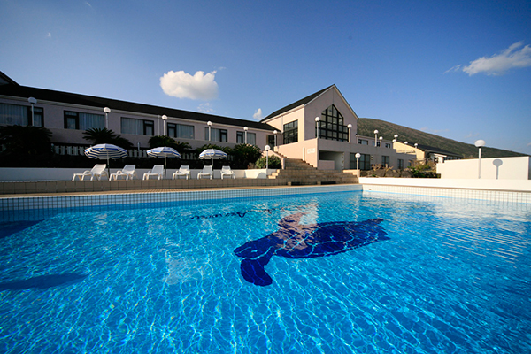
宿泊施設
八丈島の宿泊施設をご案内します。
- 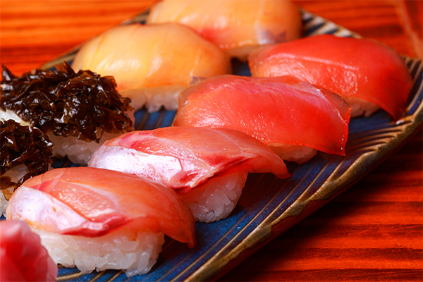
飲食店
八丈島の飲食店をご案内します。
- 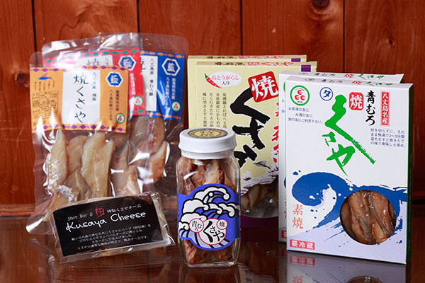
物販店
八丈島の物販店をご案内します。
- 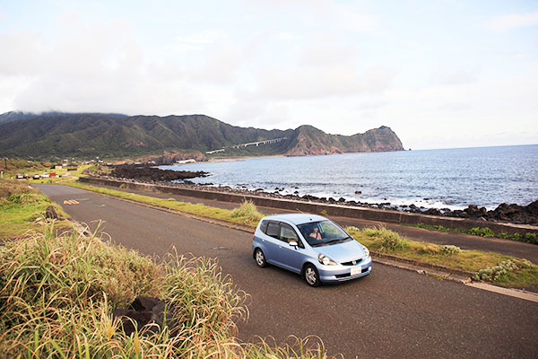
八丈島交通案内
八丈島の交通をご案内します。
- 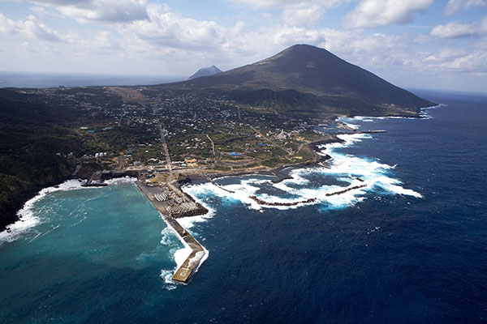
ガイドサービス
八丈島のガイドサービス施設をご案内します。
-
リラクゼーション
八丈島のリラクゼーション施設をご案内します。
- 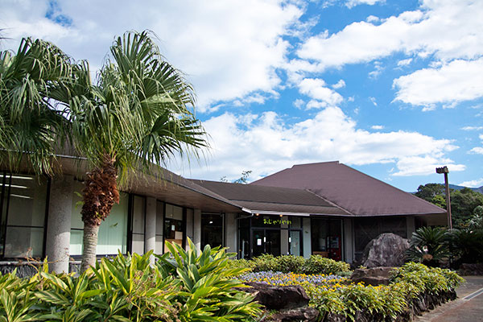
観光施設
八丈島の観光施設をご案内します。
- 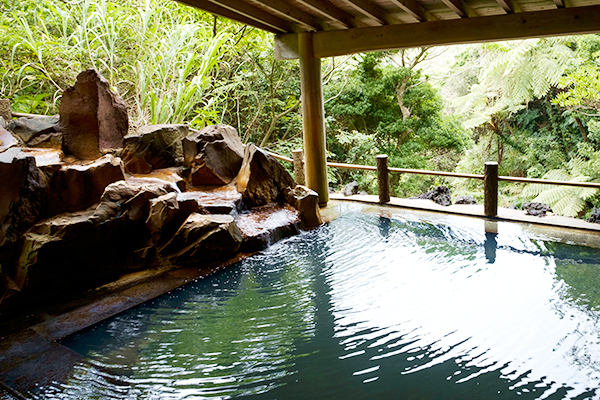
町営温泉
八丈島の町営温泉をご案内します。
-
ATMのご案内
八丈島のATM設置場所をご案内します。
島内エリア紹介
- 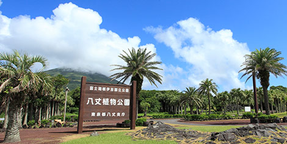
大賀郷エリア
八丈島空港、八丈町役場、八丈植物公園などがある島の中心地で、観光の拠点となるエリアです。飲食店や宿泊施設も多く点在しています。歴史散策や八丈小島の夕日鑑賞もおすすめです。
- 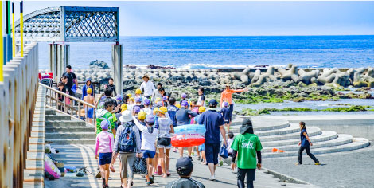
三根（Mitsune）エリア
客船が着く底土（Sokodo）港があり、すぐ隣の底土（Sokodo）海水浴場は島内唯一の人工砂浜になっており、夏は多くの海水浴客で賑わっています。大賀郷エリアと並んで飲食店や宿泊施設も多く、観光の拠点となる地域です。
- 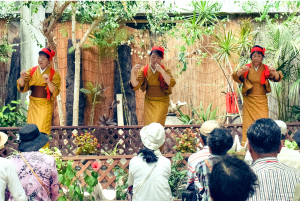
樫立エリア
坂下の大賀郷地区から大坂トンネルを越えて最初の坂上地区が樫立です。郷土芸能の樫立踊り・八丈太鼓が公演される服部屋敷や、ショートゴルフ、三原山の硫黄沼・唐滝、温泉などが楽しめます。
- 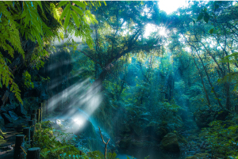
中之郷エリア
裏見ヶ滝など三原山系の水資源が豊富な地区で、温泉が4箇所湧いています。日本三大紬と称される黄八丈のめゆ工房、えこ・あぐりまーと、八丈地熱館、太古の地球を思わせるヘゴの森などがあります。
- 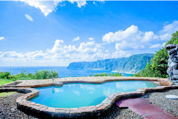
末吉エリア
トリップアドバイザー温泉ランキング上位入賞のみはらしの湯では、露天風呂からは昼の絶景と夜の星空鑑賞を楽しめます。ポットホールは大小様々な珍しい甌穴郡の事で、晴れた日の午前中がおすすめです。